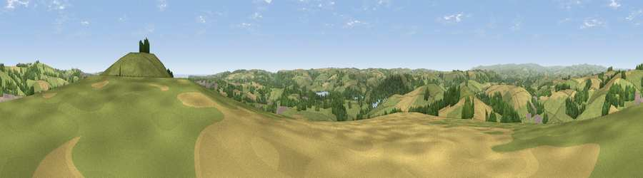

Viewpoint near Stoke Gabriel
#6181 in England · top 15% of its area beats it · near Stoke GabrielThe view, rendered

A 360° render of this exact spot computed from the terrain model, tree cover and land cover — summer colours, afternoon light, calibrated against photographs of famous viewpoints. Real trees, hedges and buildings will differ in detail.
The panorama
Grey silhouette: terrain skyline in each direction (720 bearings, Earth curvature and refraction included). Dashed green: skyline with trees (+15 m) and buildings (+8 m) as obstacles. Blue strip: how far the ground is visible on each bearing.
Where the view opens
Wedge length = distance to the farthest visible ground on that bearing (vegetation-aware). Rings at 10, 25 and 50 km.
What fills the view
57% grassland · 19% cropland · 19% woodland · 4% built-up · 1% water
Angular shares of the visible panorama (visual magnitude), not map area. Landscape diversity 0.49 (0–1 Shannon).
Key numbers
More beautiful places nearby
The staircase of upgrades: each row has a higher view potential than everything closer. Driving times are estimates from straight-line distance, calibrated against real road routing — check an actual route before setting out.
| Place | Direction | Drive | Score |
|---|---|---|---|
| Viewpoint near Stoke Gabriel | E · 1 km | ~2 min | 79.1 |
| Beacon Hill | NNE · 3 km | ~7 min | 82.3 |
| Viewpoint near Kingswear | SE · 10 km | ~20 min | 83.8 |
| Viewpoint near Stokeinteignhead | NE · 13 km | ~24 min | 84.1 |
| Viewpoint near East Prawle | SSW · 24 km | ~40 min | 84.6 |
| High Peak | NE · 37 km | ~56 min | 85.3 |
| Golden Cap | ENE · 65 km | ~88 min | 88.7 |
| The Knoll | ENE · 74 km | ~98 min | 91.0 |
50.42256, -3.62339 · source: screening · position refined by local search. Computed location — check access rights before visiting.